Presentation 1
British and American English
Morphological differences between two varieties of one language.
By María José, Keilyn and Valeria
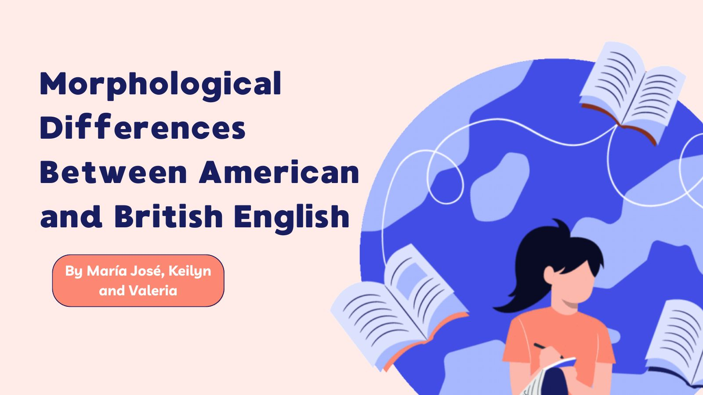


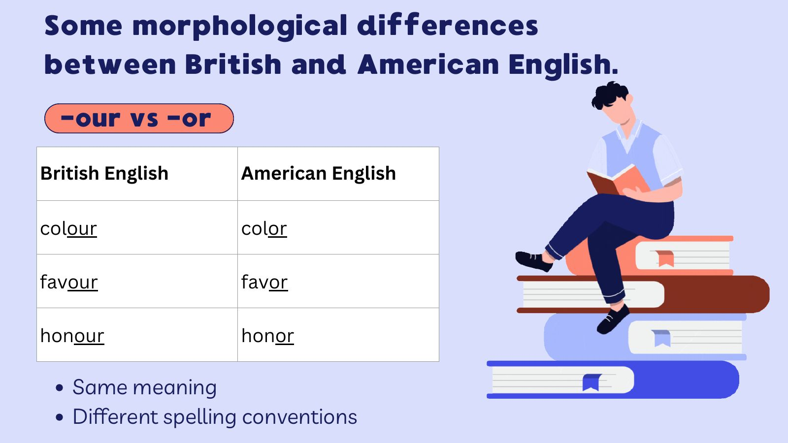


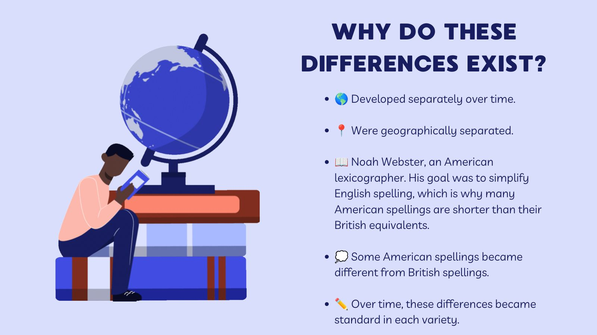
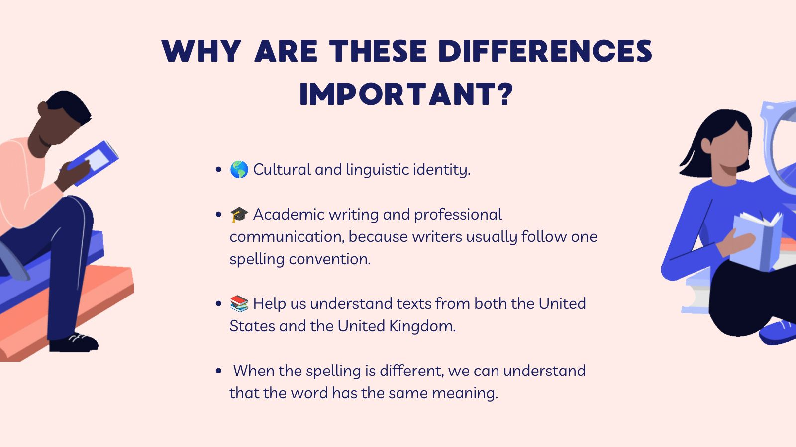
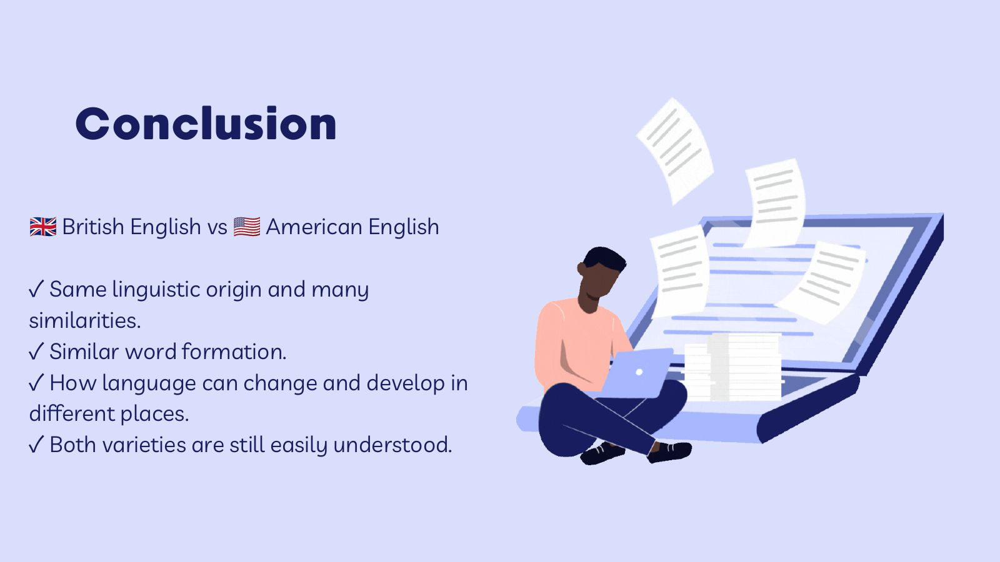

What's morphology?
The branch of linguistics that studies word structure and word formation: roots, prefixes, and suffixes. It helps us see patterns in language and how words can change form while keeping their meaning.
What the two varieties share
- Same origin
- Both developed from the same language.
- Same grammar
- A very similar grammatical system.
- Same word formation
- Similar processes and the same prefixes and suffixes.
Four patterns that differ
Switch the variety to see how the endings change while the meaning stays the same.
-our / -or
colourfavourhonour-re / -er
centretheatremetreDouble L / single L
travelledtravellingcancelled-ise / -ize
organiserecogniseapologiseSame meaning, same pronunciation, different spelling conventions. With double L, the difference shows up when adding suffixes like -ed and -ing.
Why do these differences exist?
The two varieties developed separately over time because they were geographically separated, a clear case of regional variation. The American lexicographer Noah Webster also set out to simplify English spelling, which is why many American spellings are shorter than their British equivalents. Over time, each set of spellings became standard in its own variety.
Why do they matter?
- Identity
- Spelling is part of cultural and linguistic identity.
- Academic and professional writing
- Writers are expected to follow one convention consistently.
- Reading both
- Knowing the patterns helps us understand texts from both the US and the UK, and recognize that different spellings carry the same meaning.
Colour or color. Same word, same meaning, two standards.
My notes
Replace this with your own notes. Ideas: what was your part of the presentation? Which variety do you use when you write in English, and why?
Presentation 2
Mirror languages: Spanish and Italian
Two Romance languages compared through syntax, morphology, phonetics, and phonology.
Group presentation
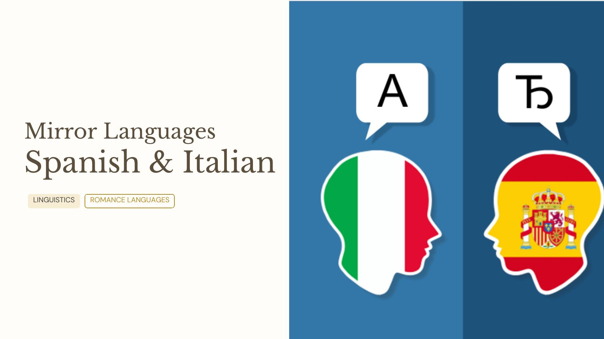

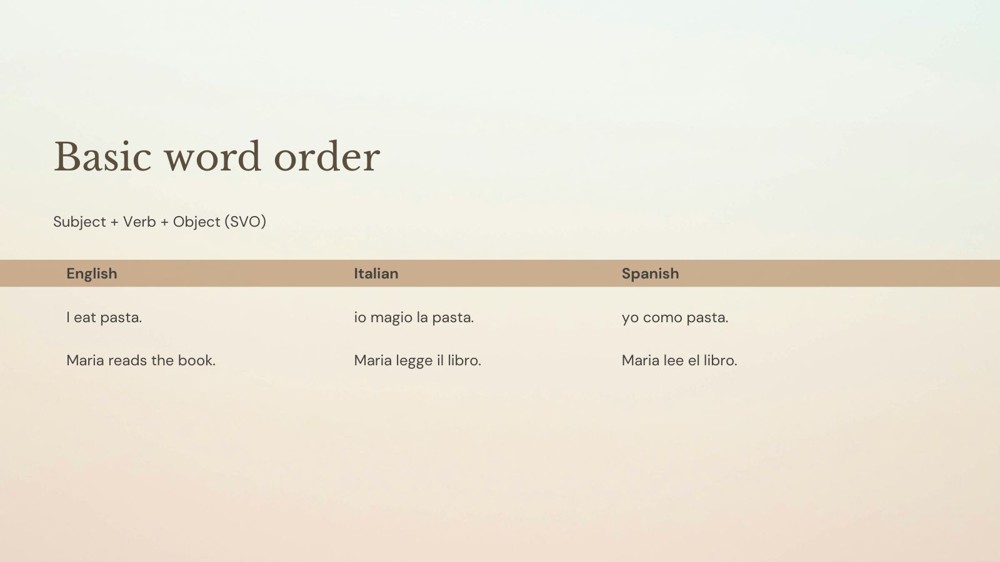
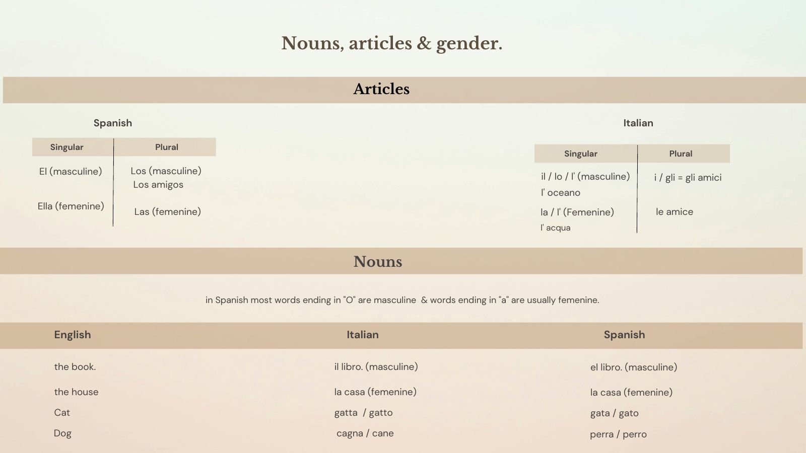
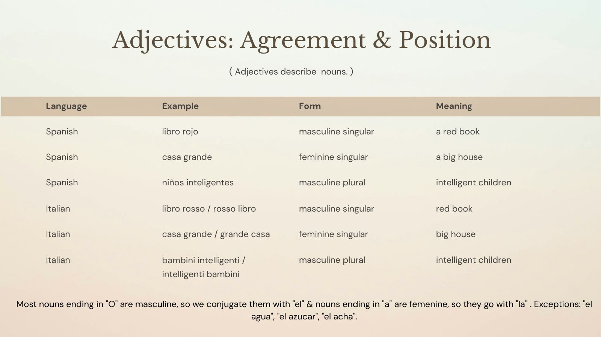
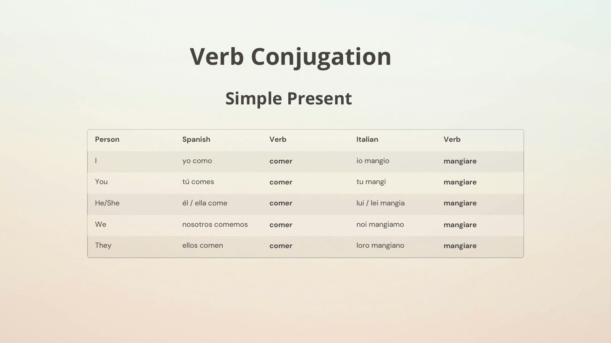
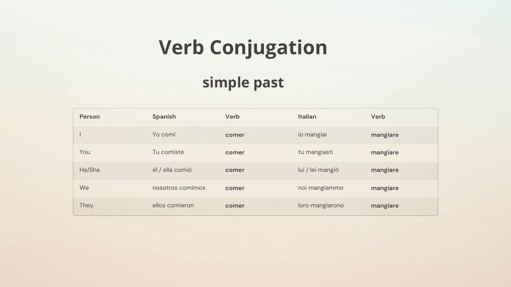
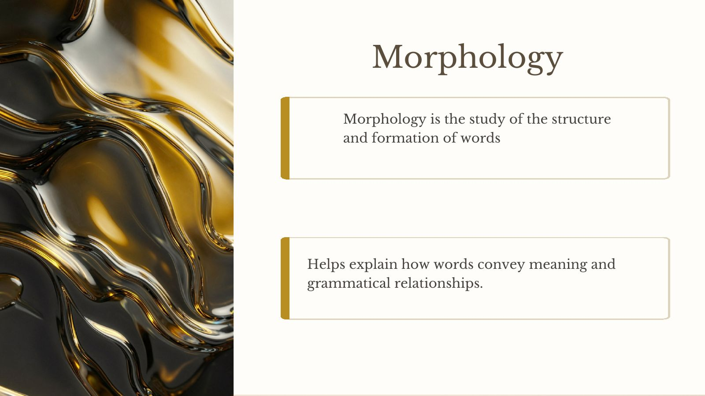
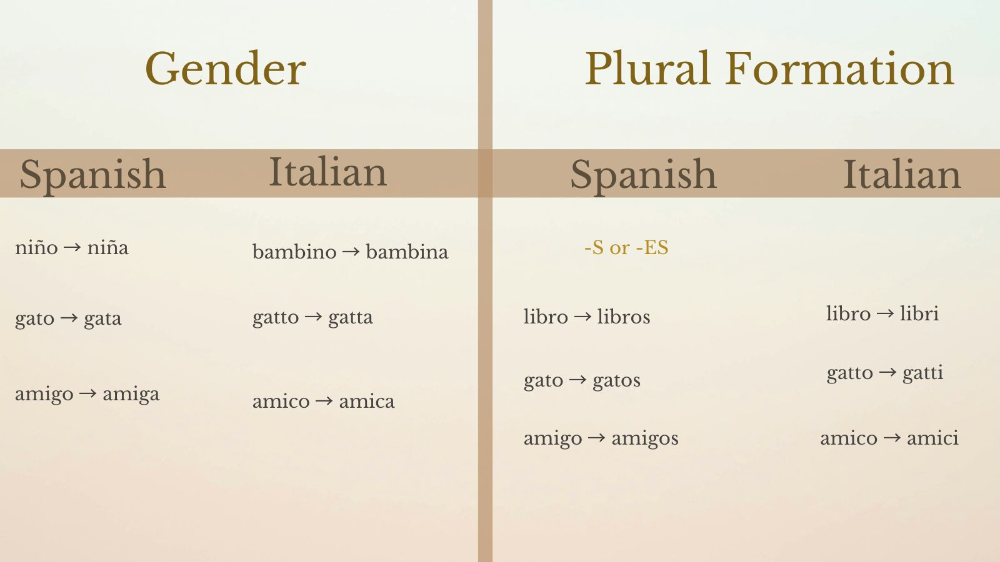
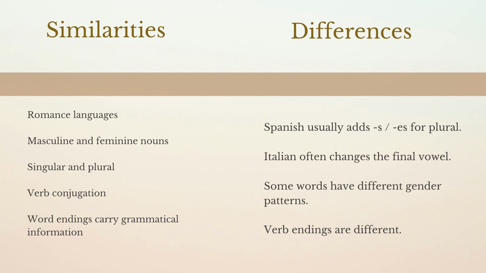


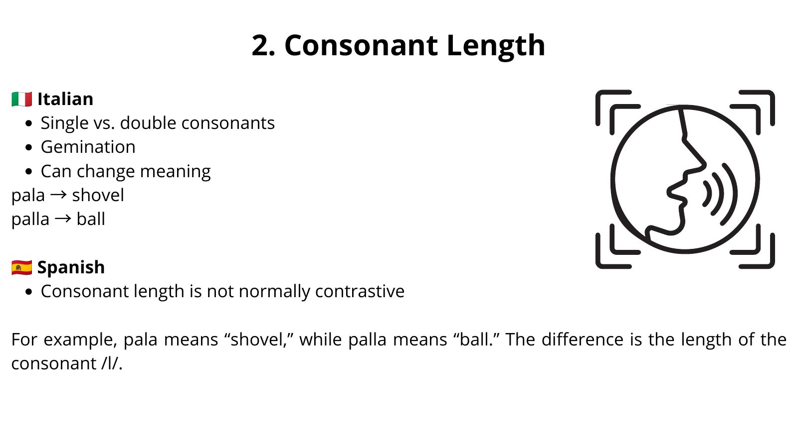


Syntax
Syntax is about how sentences and phrases are built from smaller phrases and words. Both languages share the basic order Subject + Verb + Object.
Spanish
- Yo como pasta.
- María lee el libro.
Italian
- Io mangio la pasta.
- Maria legge il libro.
Articles and gender
Spanish
- el / los masculine
- la / las feminine
- los amigos
- el libro, la casa
Italian
- il, lo, l’ / i, gli masculine
- la, l’ / le feminine
- gli amici, l’oceano
- il libro, la casa, l’acqua
In both languages, most nouns ending in -o are masculine and most ending in -a are feminine: gato / gata, gatto / gatta. Watch out for exceptions like el agua and el hacha, feminine nouns that take el before a stressed a.
Adjectives: agreement and position
Adjectives agree with the noun in gender and number, and usually come after it.
Spanish
- libro rojo
- casa grande
- niños inteligentes
Italian
- libro rosso
- casa grande
- bambini intelligenti
In Italian, a few adjectives like grande can also go before the noun: una grande casa.
Verb conjugation
| Person | Spanish, present | Italian, present | Spanish, past | Italian, past |
|---|---|---|---|---|
| I | yo como | io mangio | yo comí | io mangiai |
| you | tú comes | tu mangi | tú comiste | tu mangiasti |
| he / she | él / ella come | lui / lei mangia | él / ella comió | lui / lei mangiò |
| we | nosotros comemos | noi mangiamo | nosotros comimos | noi mangiammo |
| they | ellos comen | loro mangiano | ellos comieron | loro mangiarono |
Verbs: comer and mangiare. The Italian past here is the passato remoto; in everyday speech Italians usually say ho mangiato.
Morphology
The study of the structure and formation of words, and how they convey meaning and grammatical relationships.
Gender
Spanish
- niño → niña
- gato → gata
- amigo → amiga
Italian
- bambino → bambina
- gatto → gatta
- amico → amica
Plural formation
Spanish: add -s / -es
- libro → libros
- gato → gatos
- amigo → amigos
Italian: change the final vowel
- libro → libri
- gatto → gatti
- amico → amici
Mirror or not?
Similarities
- Both are Romance languages
- Masculine and feminine nouns
- Singular and plural
- Verb conjugation
- Word endings carry grammatical information
Differences
- Spanish adds -s / -es for plural
- Italian changes the final vowel
- Some words have different gender patterns
- Verb endings are different
Phonetics and phonology
Phonology studies how sounds are organized in a language and how they can change meaning. Both languages share the five vowels /a e i o u/ (casa, vino, luna sound alike in both), and their R sounds are similar.
| Feature | Spanish | Italian | Example |
|---|---|---|---|
| Vowels | 5 vowel phonemes /i e a o u/ | 7 in stressed syllables /i e ɛ a ɔ o u/ | pésca / pèsca |
| R sound | Tap and trill | Tap and trill also occur | pero / perro |
| Double consonants | Not contrastive | Can change meaning | pala / palla |
| C sound | Depends on the next vowel and the dialect | Depends on the next vowel | casa / cena |
| G sound | Depends on the next vowel | Depends on the next vowel | gato / gelato |
| H | Usually silent | Usually silent | hola / ho |
| Stress | Can distinguish words | Can distinguish words | público / pubblico |
One sound, a different word
A phonological contrast is a sound difference that changes meaning. Each language uses different contrasts.
Italian: consonant length
pala
shovel
palla
ball
Italian: open vs. closed e
pésca
fishing
pèsca
peach
Spanish: tap vs. trill
pero
but
perro
dog
Stress and syllables
Both languages have lexical stress: one syllable is more prominent. Spanish marks it with written accents that follow specific rules (canción, teléfono); Italian stress can fall in different positions (telefono, città, università).
Their syllable structures are similar too: CV ca-sa, CVC pan, can-to, CCV pla-to, pro-va. Italian geminates split across syllables: pal-la. (C = consonant, V = vowel.)
My notes
Replace this with your own notes. Ideas: are Spanish and Italian mutually intelligible for you? Which Italian sound or word surprised you most?